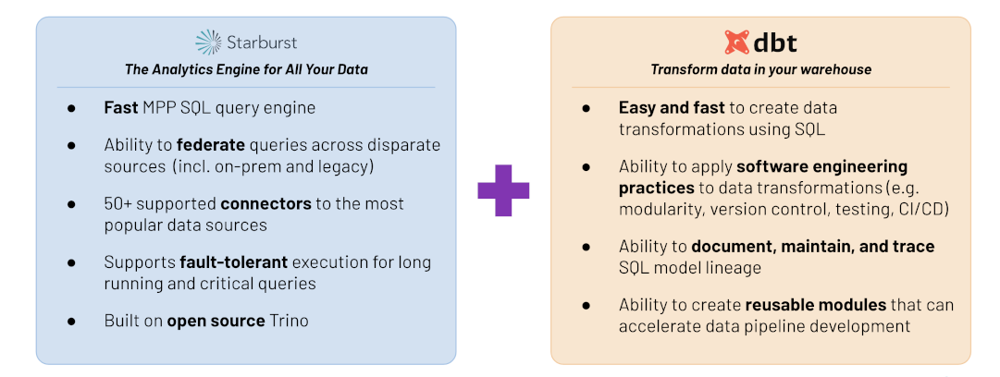

This is part three of the lakehouse ETL with dbt and Trino series. Start at the introduction if you haven’t already.
Incremental models
To refresh data faster, you can use incremental models which limit the amount of data loaded to the target table and significantly reduces loading time. The first time an incremental model is run, the table is created by transforming all rows from the source. On subsequent runs, dbt transforms only the rows in your model that you tell dbt to filter for inserting them into target table. Incremental models vastly improve performance and reduces compute costs.
To use incremental models just add materialized='incremental' into your model
configuration:
{{
config(
materialized='incremental',
unique_key='id'
)
}}
SELECT * FROM ...
A unique_key determines whether a record has new values and should be updated.
By using unique_key, you can ensure that each row from the source table is
represented by a single row in your incremental model, without duplicates. Not
specifying a unique_key results in append-only behavior, which means dbt
inserts all rows returned by the model’s SQL into the preexisting target table
without regard for whether the rows represent duplicates.
In cases where you need multiple columns in combination to uniquely identify
each row, you can pass these columns as a list similar to unique_key = ['id',
'user_id'].
Reduce data for processing
To tell dbt which rows it should transform on an incremental run, wrap valid SQL
that filters for these rows in the is_incremental() macro.
This filter is only applied on subsequent incremental runs.
Include this macro in the model configuration:
SELECT * FROM ...
{% if is_incremental() %}
WHERE eventtime > (SELECT max(eventtime) FROM {{ this }})
{% endif %}
Incremental strategies
The dbt-trino adapter supports multiple incremental strategies which instruct
how the data is loaded into the target table. Different approaches may vary
by effectiveness depending on the volume of data, the reliability of your
unique_key, or the availability of certain features.
dbt-trino supports the following incremental strategies:
append(default)delete+insertmerge
append
The default incremental strategy is append, which only adds the new records
based on the condition specified in the is_incremental() conditional block. It
can be configured without a unique_key, since it only inserts the data into
the target table.
{{
config(
materialized = 'incremental'
)
}}
SELECT * FROM ...
delete+insert
Through the delete+insert incremental strategy, you can instruct dbt to use a
two-step incremental approach. It deletes the records detected through the
configured is_incremental() block before re-inserting them.
{{
config(
materialized = 'incremental',
unique_key='user_id',
incremental_strategy='delete+insert',
)
}}
SELECT * FROM ...
merge
Through the merge incremental strategy, dbt-trino constructs a MERGE
statement which inserts new and updates existing records based on the unique
key.
Note that some connectors in Trino have limited or no support for MERGE.
{{
config(
materialized = 'incremental',
unique_key='user_id',
incremental_strategy='merge',
)
}}
SELECT * FROM ...
Refresh data faster on your lakehouse
Refresh your data faster using the incremental models described.
Since you only need to insert new records that appeared from the day before,
based on the event_time column, loading the clicks data into the src_clicks
view in the data lake could be an append incremental strategy.
{{
config(
materialized='incremental'
)
}}
with source as (
SELECT * FROM {{ source('website', 'clicks') }}
),
renamed as (
SELECT
visitorid,
useragent,
language,
event,
cast(from_iso8601_timestamp(eventtime) as timestamp(6) with time zone) AS eventtime,
page,
referrer
FROM source
)
SELECT * FROM renamed
{% if is_incremental() %}
-- this filter is only applied on an incremental run
WHERE eventtime > (SELECT max(eventtime) FROM {{ this }})
{% endif %}
Now, create a customer_sessions table, which is used to create the next table.
It calculates when a particular session has started and ended.
SELECT
cookie_id,
last_value(customer_id) IGNORE NULLS OVER (
PARTITION BY cookie_id ORDER BY session_started ASC ROWS BETWEEN UNBOUNDED PRECEDING AND CURRENT ROW
) AS customer_id,
session_started,
lead(session_started, 1, current_timestamp(6)) OVER (PARTITION BY cookie_id ORDER BY session_started asc) AS session_ended
FROM {{ ref("src_sessions") }}
Since the sessionization (the calculating and connecting clicks with sessions)
can affect older sessions, you should use the MERGE incremental strategy to
update existing records and insert only new records into the
sessionized_clicks table based on the clickid column.
{{
config(
materialized='incremental',
unique_key="clickid",
incremental_strategy='merge',
)
}}
with sessions as (
SELECT
date_diff('hour', lag(c.eventtime) OVER w, c.eventtime) > 1 AS new_session,
{{ dbt_utils.star(ref("src_clicks"), "c") }},
{{ dbt_utils.star(ref("customer_sessions"), "s", ["session_started", "session_ended"]) }},
first_value(c.referrer) IGNORE NULLS OVER (PARTITION BY s.customer_id ORDER BY c.eventtime ASC ROWS BETWEEN UNBOUNDED PRECEDING AND CURRENT ROW) AS channel,
row_number() OVER w AS clickid,
min(eventtime) OVER w AS session_started,
max(eventtime) OVER w AS session_ended
FROM {{ ref("src_clicks") }} c
JOIN {{ ref("customer_sessions") }} s ON c.visitorid = s.cookie_id
AND c.eventtime between s.session_started
AND s.session_ended
window w AS (
PARTITION BY c.visitorid ORDER BY c.eventtime
)
),
sequenced_sessions as (
SELECT
{{ dbt_utils.star(ref("src_clicks")) }},
sum(if(new_session, 1, 0)) OVER w AS session_sequence,
clickid,
customer_id,
session_started,
session_ended,
channel
FROM sessions
WINDOW w AS (
PARTITION BY visitorid
ORDER BY eventtime
)
)
SELECT
visitorid || '_' || cast(session_sequence as varchar) || '_' || cast(clickid as varchar) AS clickid,
visitorid || '_' || cast(session_sequence as varchar) AS sessionid,
customer_id,
session_started,
session_ended,
channel,
{{ dbt_utils.star(ref("src_clicks")) }}
FROM sequenced_sessions
Summary
dbt and Trino are well maintained and trusted open source projects with thrilling communities that are always ready to learn more and expand the ecosystem. Starburst improves the landscape of broad Trino features and capabilities by offering enhanced built-in security systems, SaaS connectors, UI and much more.

If you want to learn more about dbt, Trino, or Starburst and how they coexist, drop us a message on the Trino #python-client or the dbt #db-presto-trino Slack channels. Don’t hesitate to ping us directly on Slack, as well.
Thanks, Przemek and Michiel